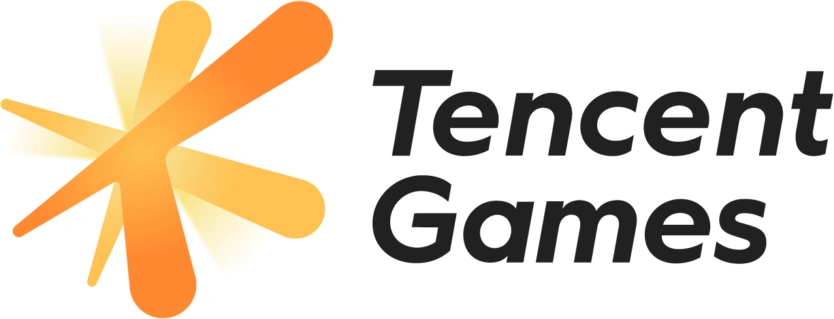

Greetings! This is Shuang Liang | 梁爽
My research focuses on computer vision, representation learning, and generative models.
🧑🎓 I’m a second-year Ph.D. student at the Department of Electrical and Computer Engineering, The University of Hong Kong. I am very fortunate to be advised by Prof. Han Wang and Prof. Xihui Liu.
🔬 Before joining HKU, I obtained my undergraduate degree in Physics from School of Physics and Technology, Wuhan University. During my undergraduate years, I spent a wonderful time at Genra.ai, under the supervision of Dr. Guo Zhang and the guidance of Prof. Yingcong Chen and Prof. Yuan Yuan; we have maintained a strong and frequent research collaboration ever since. I also worked on interesting topics in condensed matter physics and AI for science under the guidance of Prof. Shengjun Yuan and Prof. Shunping Zhang.
 You may also follow my WeChat Official Account @Teemo.log. It is a place where I share daily updates and personal thoughts. Articles from my WeChat Official Account are Chinese only.
You may also follow my WeChat Official Account @Teemo.log. It is a place where I share daily updates and personal thoughts. Articles from my WeChat Official Account are Chinese only.
What's New
- [05/2026] 🎉 New Work: Our new paper From Pixels to Concepts (CAFE) is now on arXiv.
- [04/2026] 🎉 SDPose is officially hosted by Comfy Org!: Our SDPose is now natively supported in ComfyUI. See the official tutorial, the Comfy-Org HF Model, and try the ready-to-run OOD Image-to-Pose workflow.
- [10/2025] 🎉 Our work SDPose-OOD is getting noticed!: A big shout-out to the community developers who made a ComfyUI node for SDPose-OOD, making it even easier to integrate into creative workflows. 🙌 Try it out here: ComfyUI Node SDPose-OOD.
- [10/2025] 🚀 Open-source of SDPose: Major code and model release now available: GitHub Repository | HF Model (Body) | HF Model (WholeBody).
- [09/2025] 🧑💻 New paper release: Check out our new work SDPose on exploiting the diffusion priors for OOD and robust pose estimation. I'm sooooo excited to share this work. Thank Dr. Guo Zhang, Professor Yingcong Chen, and Professor Yuan Yuan for their invaluable guidance.
- [09/2025] 🍻 IEDM '25: One paper accepted by IEDM 2025. Thank Professor Han Wang, Professor Aoyang Zhang, and Professor Zhongrui Wang for their invaluable guidance, and thank Songqi and Jichang for the smooth collaboration.
Earlier news
- [01/2025] 🍻 Optica Optics Express '25: One paper for my undergraduate research was accepted by Optics Express. Thank Professor Zhang for his invaluable guidance, and thank Yuze and Haimu for their collaboration and support.
- [10/2024] ✈️ Enrollment@HKU: New journey started. I began my postgraduate research study at the Department of Electrical and Electronic Engineering at the University of Hong Kong.
- [06/2024] 🎓 Graduation@WHU: Received my Bachelor of Science degree in Physics from Wuhan University. I am grateful to have received guidance and enlightenment in computational physics and AI4Sci from Prof. Shengjun Yuan, and guidance in experimental optoelectronics from Prof. Shunping Zhang during my undergraduate studies.
- [02/2024] 🧑💻 Internship@Rama Alpaca: I started as an MLE research intern at Beijing Rama Alpaca Co. Ltd. in the spring semester under the supervision of Dr. Guo Zhang from MIT, collaborating with Prof. Yingcong Chen at HKUST and Prof. Yuan Yuan at Boston College.
- [02/2023] 🧑💻 Research@CPCS-WHU: I've joined Prof. Shengjun Yuan's group at Wuhan University as a research assistant this semester.
- [02/2022] 🔬 Research@Xu Lab-WHU: I've joined Prof. Shunping Zhang's lab at Wuhan University for undergraduate research.
Education
Industrial Experience

Featured Publications
First-author and co-first-author works are highlighted below. For the full list, please refer to the Publication section or my Google Scholar.
†These authors contributed equally. *Corresponding author.
|
Preprint 2026
4. "From Pixels to Concepts: Do Segmentation Models Understand What They Segment?", Shuang Liang†, Zeqing Wang†, Yuxian Li†, Xihui Liu and Han Wang*. |

|
|
IEDM 2025
3. "A Monolithic Reconfigurable RRAM CIM Array Integrating PUF, TRNG, and a Lightweight Block Cipher for Secure Edge AI", Songqi Wang†, Shuang Liang†, Shaonan Wu†, Zhiqi Yang, Jichang Yang, Xinyuan Zhang, Yi Li, Yuhao Zhang*, Zhongrui Wang*, Aoyang Zhang* and Han Wang*. |

|
|
Preprint 2025
2. "SDPose: Exploiting Diffusion Priors for Out-of-Domain and Robust Pose Estimation", Shuang Liang, Jing He, Chuanmeizhi Wang, Lejun Liao, Guo Zhang, Yingcong Chen and Yuan Yuan*. |
|
|
Opt. Express 2025 JCR Q1, CAS Q2
1. "Saturable Absorption of Few-layer $\mathrm{WS_{2}}$ and $\mathrm{WSe_{2}}$ at Exciton Resonance", Shuang Liang, Yuze Lu, Haimu Liu, Xiaohe Shang, Jiamin Ji, Rongguang Du, Yiling Yu and Shunping Zhang*. |

|


Featured Open-source Projects (Github)


Github Stats

|

|
Selected Honors
| Outstanding Bachelor's Thesis at Wuhan University (Top 5%, in the School of Physics and Technology). | 2024 |
| First Class Scholarship (Top 5%, for academic excellence) by Wuhan University. | 2021 |
Teaching and Review Services
| Teaching Assistant, ENGG1330 Computer Programming I, HKU | 2025 Spring |
| Teaching Assistant, ELEC3644 Advanced Mobile Apps Development, HKU | 2025 Fall |
Interesting Facts About Myself
- In Chinese context, my name has the same meaning as the word "cool", referring to the pleasant weather of the season I was born. It is also a somewhat girly name, so people often mistake me as a girl before meeting me. My preferred name is Tim, which is my English name but not part of my legal name.
- I spent my childhood and adolescence along the majestic Yellow River, where the waters whispered tales of ancient civilizations. My college years unfolded beside the mighty Yangtze River, a flowing testament to China's enduring spirit and progress. Now, I find myself working beside the vibrant Pearl River, where the currents echo the pulse of modernity and innovation.
- Music takes up most of my free time. I listen to a wide range of styles, including country, J-rock, and Chinese folk, almost anything centered on guitar. I also enjoy pop, hip-hop, and EDM. I am a big fan of Taylor Swift, Adele, Billie Eilish, and Beyonce, and I am always happy to talk about music across different genres.
- Naturally, I am also an anime fan at heart, and my favorite titles give away the same bias as my playlists: BanG Dream!, Bocchi the Rock!, and Sound! Euphonium are all stories about people who can only say the difficult things through an instrument.
- During my undergraduate years at WHU, I also cultivated a deep passion for Chinese debate. I served as the captain of the School of Physics debate team (Class of 2020) and took the lead in organizing the "Xunli Debate" (寻理杯) competition during my time on campus.